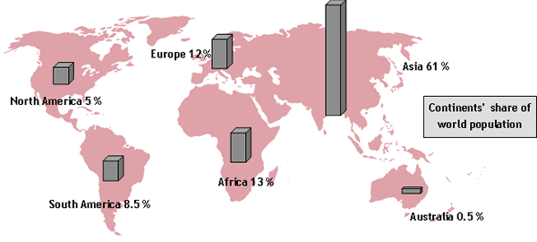
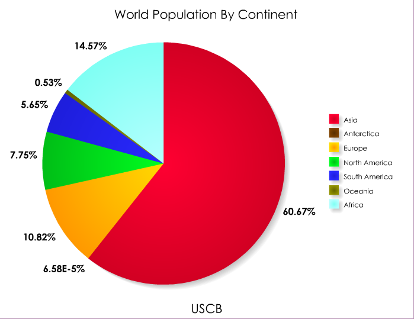

Populacija po kontinentima
Na Zemlji trenutno živi oko 7,7 milijardi ljudi.
Procene UN-a koje su osamdesetih godina prošlog veka napravljene za 2019. godinu bile su više za oko 600.000. Svakog dana se širom sveta rodi oko 220.000 ljudi, dok oko 95.000 umre. Svetsko stanovništvo trenutno raste po stopi od oko 1,07 odsto godišnje, što je mali pad u odnosu na prethodne četiri godine. Prosečan porast stanovništva procenjuje se na 82 miliona ljudi godišnje.

|
Procene su i da će do 2050. devet država učestvovati u polovini rasta svetske populacije.To su Sjedinjene Američke Države, Indija, Kongo,Nigerija, Uganda, Etiopija, Pakistan, Tanzanija i Indonezija. Očekuje se da će 2024. Indija prestići Kinu po broju stanovnika, da će Nigerija preteći SAD i postati treća najveća zemlja po broju stanovnika. |
|
|
Kontinenti po broju stanovnika:
|
 |